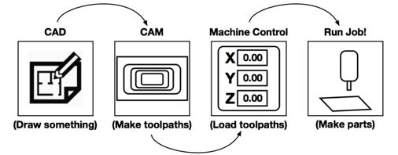

Welcome to the CNC-Wiki¶
This site will guide you, step-by-step, through the complete CNC workflow, from a digital drawing to a physical object you can hold.
The CNC Workflow¶

Summary of Steps¶
Below is a quick summary of the journey. Click any step to jump to the detailed guide.
1. CAD by design The "drawing" phase. We'll use CAD design software to create a digital design of our ideas.
2. CAM the carver The "planning" phase. We'll tell the computer how to carve the drawing, what tool to use, and how fast to go.
3. Control the machine The "communication" phase. We'll connect our computer to the CNC machine and send it the instructions.
4. CNC the maker The "making" phase. We'll set up the machine, secure our material, and watch it carve!
5. Finishing to Beautify Sand! Stain! Paint! No project is complete until you have applied your sense of design and aesthetics to beautify your project and present it to the world.